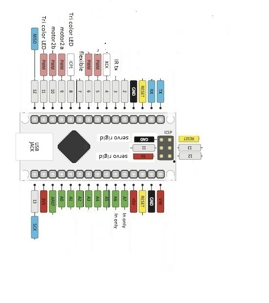

Hardware/Software Requirements
Arduino Nano

- Move tank right / left / forward / reverse
- Infra-Red transmit and receive
- Send esp32 notification when infra-red hit is detected
- Provide 5V power to Esp32
- Keep record of tank health
- Receive commands from bluetooth joystick
- Pass turret and fire commands to esp 32
Esp32-Camera

- Move turret left / right / up / down
- Light LED when hit
- Provide camera functionality